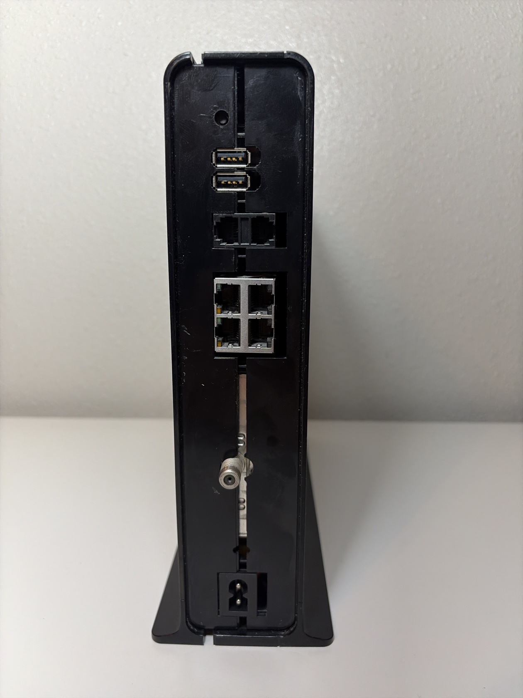
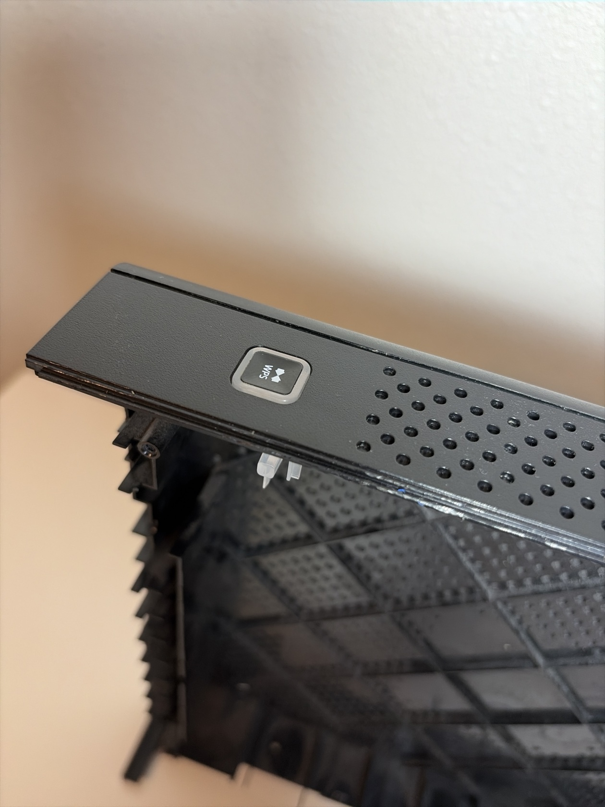
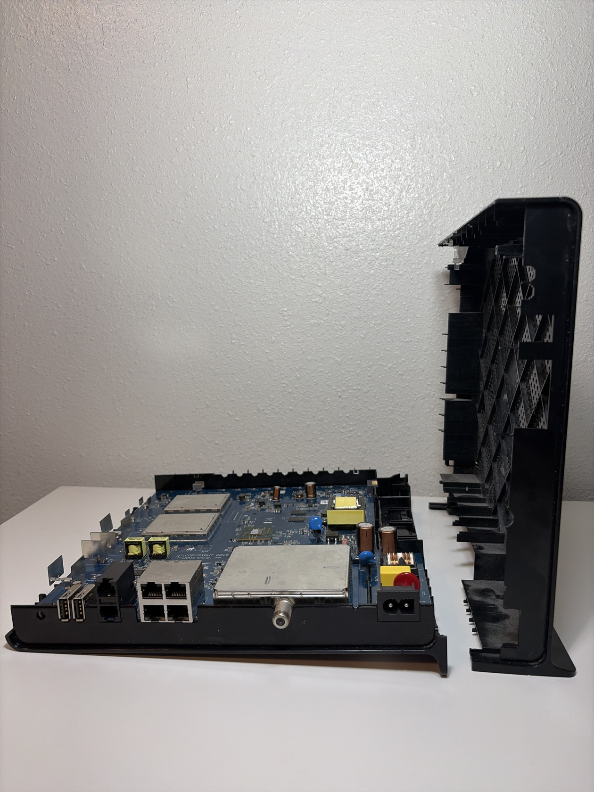
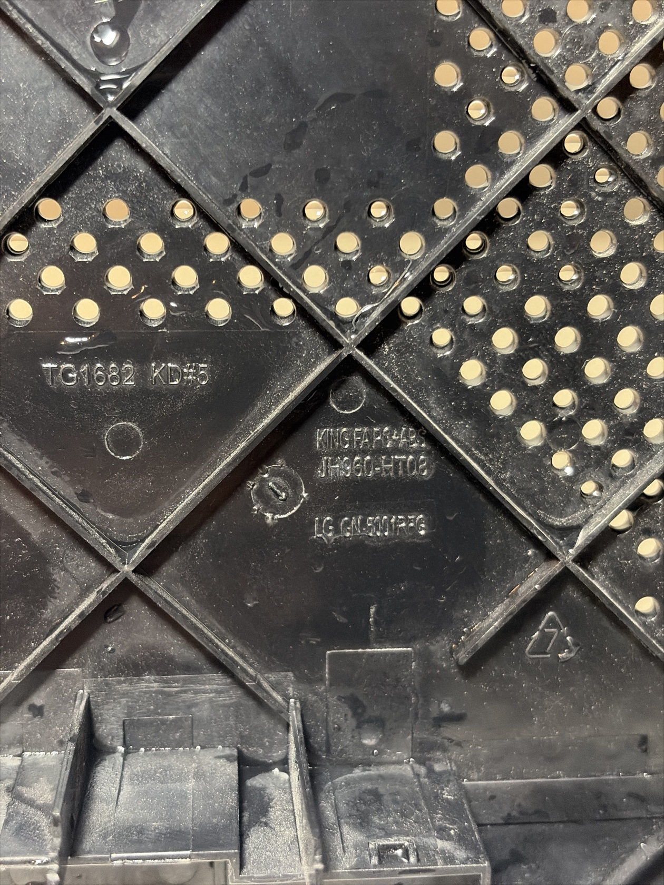
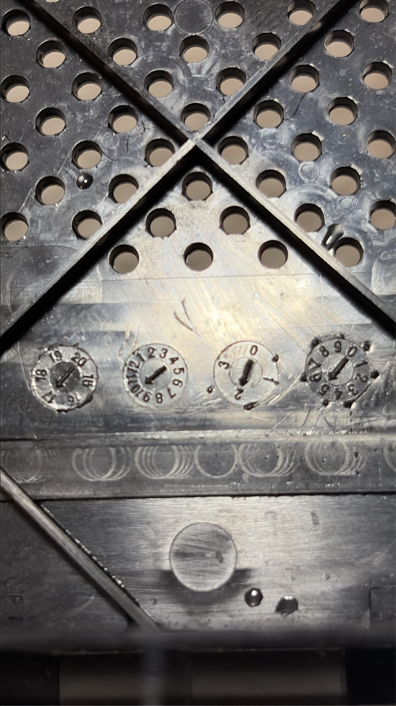
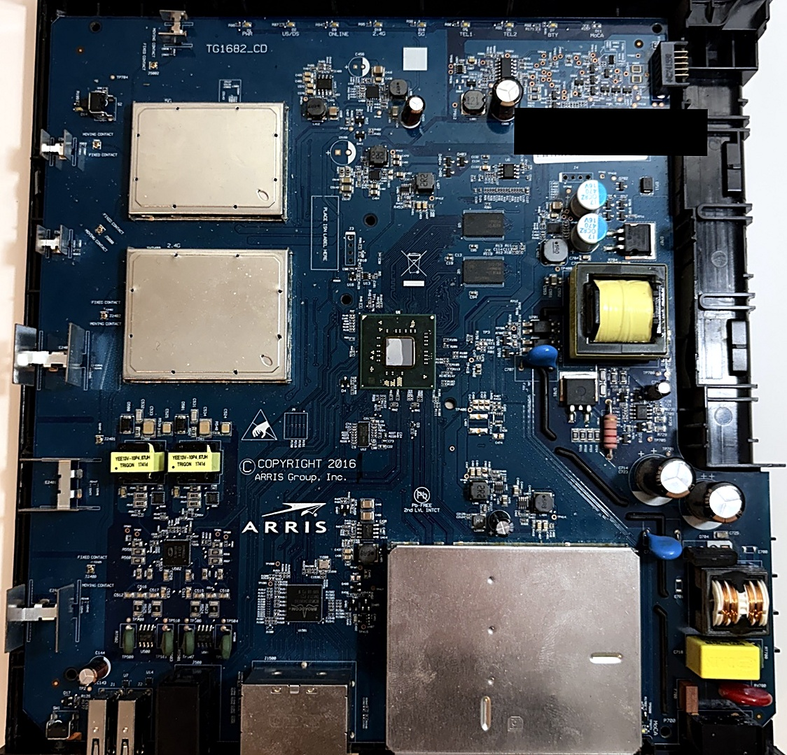
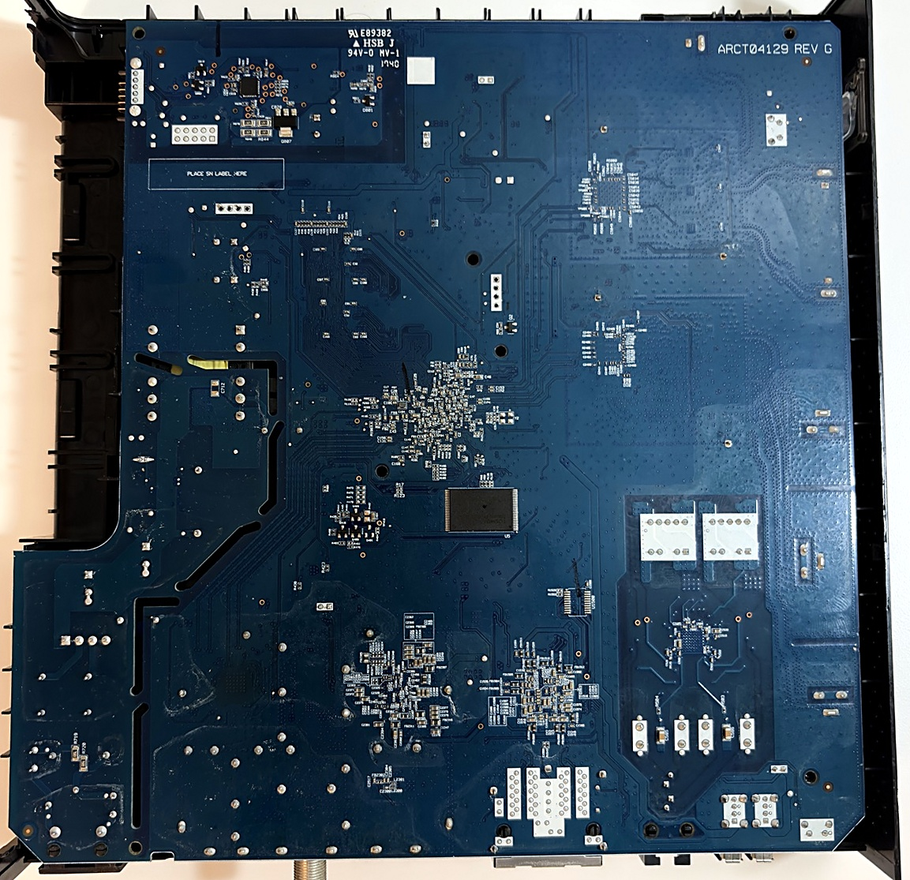

The Autopsy Report · Device #001
The Xfinity XB3
Millions of these boxes sat in American homes. We opened one and read its whole life story — from the plastic it was born in to the first words it says when it wakes up.
What is this thing?
The XB3 is the box Comcast handed to millions of internet customers. Its real name is the Arris TG1682G, and one box does three jobs: it's a cable modem (it talks to Comcast through the coax cable in your wall), a router (it shares that connection with your home), and a Wi-Fi access point (the wireless part). It also has two phone jacks, because Comcast sold home phone service through the same box.
If you had Xfinity internet in the late 2010s, there is a good chance this exact box — tall, black, with a single glowing strip on the front — was sitting in your living room. When Comcast launched xFi in May 2017, they said 10 million customers already had compatible gateways — mostly this box.
Whose box is this?
This one is ours — a prepaid unit, owned outright, opened on our own bench. That matters, because most XB3s in the wild were rented, which legally makes them Comcast's property. We don't open other people's property. Everything in this report comes from our own unit plus public records. Nothing here applies to anyone else's rented gateway, and nothing here bypasses anyone's ISP controls.
The unit arrived already opened and missing a few small parts — so this is an as-found autopsy, dust and all. We photographed it exactly as it came to us before cleaning anything.
A short history
The chip inside this box has a backstory — fraud, lawsuits, and all. One note first: "XB3" was Comcast's service tier, not one box. Arris made this one; Cisco made another (the DPC3941B). Same tier, different hardware.
- 2010Intel buys Texas Instruments' cable-modem business. TI's Puma chips become Intel's — and the Atom-based Puma 6 at the heart of this box is born from that deal. Intel press release
- September 2015Arris announces the TG1682G for Comcast. It ships as the XB3: a DOCSIS 3.0 gateway with 24 downstream channels, two phone lines, and dual-band Wi-Fi. TelecomLead
- December 2016The Puma 6 defect goes public. Users and The Register document severe lag spikes under certain traffic — enough to ruin gaming and video calls — and two firmware fixes never fully cure it. The Register
- March 2017A class-action lawsuit is filed against Arris over the defective chip. The Register
- May 2017Comcast launches Xfinity xFi and renames the XB3 the "xFi Wireless Gateway" — day one, 10 million customers have compatible hardware. That number covers the XB3 and its successor the XB6 together, not XB3s alone. Comcast · TechCrunch
- 2017The XB6 arrives — Comcast's DOCSIS 3.1 successor to the XB3. Nasdaq
- August 2018Intel finally issues a formal advisory and CVE-2017-5693 for the Puma flaw — a flaw The Register notes dates back to the chip's Texas Instruments days. The Register
- April 2019CommScope buys Arris for $7.4 billion. SEC filing
- 2020 – 2022The XB7 (Wi-Fi 6) and XB8 (Wi-Fi 6E) take over the lineup. Light Reading · Comcast
- TodayRetired from Comcast's rental front line — reborn as the free gateway for prepaid Xfinity NOW service. Millions of boxes, second life instead of landfill. Independent teardown
The outside
The enclosure is a tall black tower, vented on the sides, with a single light strip on the front and a WPS button on top. Around the back: two USB ports, two phone jacks, four Ethernet jacks, the coax connector where the cable signal comes in, and the power inlet.



Reading the plastic
Here's something most teardowns skip: the plastic shell tells you when and where it was born. Molded into the inside of the side panel we found "TG1682 KD#5" — the model, stamped at the factory — plus the molder's marks and a material code.

Next to the markings sit four little clock-face stamps. These are date wheels: the mold operator sets an arrow on each one, and every shell that comes out of the mold carries the date it was made. Reading ours: year 2017, month October, day 26.

The board agrees with the shell: its date code reads 1746 — the 46th week of 2017. The little yellow network transformers are stamped 1741. Every date on this unit points at the same few weeks in the fall of 2017, right in the middle of the xFi rollout. The evidence is consistent, which is exactly what you want to see.
The board
One circuit board runs the whole show. Top and bottom, straight down:


A guided tour
Seven landmarks on the top of the board. The numbers match the list below it.
- 1The brain — the Intel Puma 6 processor. Everything in the box runs through this chip.
- 22.4 GHz Wi-Fi radio — sealed under a soldered metal shield.
- 35 GHz Wi-Fi radio — same, second shield. We left both shields on: prying them off risks the board, and what we needed was already public.
- 4Cable tuner — where the coax signal lands and gets decoded into internet.
- 5Ethernet magnetics — small transformers that electrically isolate each network jack.
- 6USB ports — two of them; mostly decorative on ISP firmware.
- 7Network jacks — four gigabit Ethernet ports for wired devices.
Here's what's on it, in plain English:
- The brain (center). The green square with the silver middle is the Intel Puma 6 — the chip that runs everything. It's what's called a system-on-a-chip: processor, cable-modem hardware, and network hardware all on one piece of silicon.
- The radios (two silver cans, left). Wi-Fi lives under these metal shields — one for the 2.4 GHz band, one for 5 GHz. The shields keep the radio noise in and everything else out. We left them on: they're soldered down, and what's under them wasn't worth risking the board over.
- The cable tuner (big silver can, bottom right). This is where the coax cable's signal enters and gets decoded. The round metal connector poking out the back is the F-connector — the same kind on the back of a TV.
- The yellow boxes (bottom left). Ethernet magnetics — little transformers, one per network jack. They electrically isolate your home network from the box, so a power surge on one side doesn't fry the other. Stamped 1741: made in the 41st week of 2017.
- The power section (right side). Wall power comes in and gets converted down to the voltages the chips need. The yellow-wrapped block is a transformer; the big cylinders are capacitors smoothing the power out.
- The phone jacks (TEL1, TEL2). For Comcast's home phone service — the box converts your internet connection into a dial tone.
- The USB ports. Two of them. On paper for storage or printers; in practice, mostly decorative on ISP firmware.
- The LEDs. Printed right on the board: PWR, US/DS (upstream/downstream cable signal), ONLINE, 2.4G, 5G, TEL1, TEL2, BTY (battery — the box supports a backup battery), MOCA (a home-networking standard that runs over coax).
- The spring clips (left edge). Labeled FIXED CONTACT and MOVING CONTACT — these press against the internal antennas built into the shell when the box is closed.
- J3 (near the brain). A small 4-pin header with nothing plugged into it. This is the debug port — more on it below.
- J4. Another header we identified as a JTAG debug port. Mapped, never used. Some doors you note and don't open.
Under the microscope: the chips
What's on the board, what each part does, and how sure we are. Confirmed means we saw it ourselves or measured it on this board family. Likely means public hardware records agree on it, but the chip sits under a soldered shield we chose not to remove. Every row links somewhere you can read more.
| Chip | What it does | How we know | Dig deeper |
|---|---|---|---|
| Intel Puma 6 DHCE2652 |
The main processor. Runs the modem, the router, the phone lines — all of it. | Confirmed This unit's boot log names the Puma 6 family outright; the exact model number comes from public hardware records. | Hardware database entry |
| Qualcomm Atheros AR9381 | The 2.4 GHz Wi-Fi radio. | Likely Public records for this model agree; the chip itself is under a soldered shield. | Hardware database entry |
| Qualcomm Atheros QCA9880 | The 5 GHz Wi-Fi radio — the fast one. | Likely Same basis as above. | Reference module manual (FCC) |
| Broadcom BCM53124S | The switch chip behind the four Ethernet jacks. | Likely Public records for this model agree. | Datasheet (PDF) |
| Texas Instruments TPS54328 | A power regulator that feeds the Wi-Fi radios. | Confirmed Read off a same-family board by an independent teardown, with measurements. | TI datasheet (PDF) |
| Memory: 256 MB DRAM Samsung K4B2G1646B family |
The box's short-term workspace. | Confirmed This unit's boot log reports DRAM: 256 MB. Public records list two 256 MB Samsung chips for the family — this 2017 board reports 256 MB. | Family datasheet (PDF) |
| Storage: eMMC MMC256 · 231.3 MB |
Where the box's software lives when the power is off. The system boots straight off it (root=/dev/mmcblk0p5). | Confirmed This unit's boot log names the eMMC and its exact size — and reports Flash: 0 kB, meaning no raw flash chip. Public records list a 128 MB raw NAND chip for the family; this 2017 board uses eMMC instead. | Family NAND datasheet (PDF) |
| DSP Group DCX81 | The phone chip behind the two TEL jacks. | Likely Public records quote the full package marking. | Product brief (PDF) |
Still unidentified in public records: the cable tuner, the MoCA chip, the phone-line analog parts, the power-supply controller, and whatever the BTY LED on the silkscreen actually connects to. The big vendors (Intel, Qualcomm, Broadcom) never released public datasheets for these chips — that's a documentation gap in the industry, not a gap in the research. The FCC filing for this box is public, and it gets its own section below: the government's file on this box.
The government's file on this box
Before Arris could sell a single TG1682G in the United States, it had to convince the Federal Communications Commission — the agency that regulates anything that transmits radio — that this box wouldn't drown out other wireless signals. The result is a second autopsy, performed by the government: photos of the inside and outside of the box, lab test reports, antenna datasheets, the user manual, even where the ID label goes. All of it is public, filed under this box's FCC ID: UIDTG1682 (registered by ARRIS; "UID" is the FCC's code for the company, "TG1682" the model). The original filings are dated May 19, 2014, with a follow-up change filing on September 10, 2015.
What's in the file:
- Internal and external photos — the earliest public pictures of this hardware's insides, kept under short-term confidentiality until November 1, 2014. Three years older than our 2017 unit, so we treat them as architecture evidence, not gospel.
- Test reports — measurements of what the radios actually transmit: the 2.4 GHz radio up to about a watt (971 mW), the 5 GHz radio up to about three-quarters of a watt (783 mW). Boring to read, useful as independent confirmation of what's in the box.
- The user guide, antenna datasheets, and label paperwork.
- What's missing. The schematics, the block diagram, and the "theory of operation" are listed in the filing but permanently confidential — Arris asked the FCC to keep those private, and it agreed. That's the trade this system makes: public photos, private blueprints.
Browse the file yourself: filing page · internal photos (2014)
Listening to it boot
That little J3 header is a serial console — the chip's way of narrating what it's doing as it wakes up. We connected a listener to it (a Glasgow Interface Explorer, if you're curious) and captured the whole startup, read-only. Think of it like pressing your ear to the wall: we could hear everything, but we never knocked.
What it told us: the chip introduces itself as Intel's Puma 6, revision "Cat Mountain D0." Then a starter program called U-Boot (version 1.2.0) runs, identifies the board as "harborpark-mg" — Arris's internal codename — and loads the main software, a Linux system (version 3.12.14), from the box's built-in flash storage into memory. Start to finish, no pauses, no login prompt. The whole thing is over in seconds.
Why does this matter? Because now anyone can know what software their gateway runs at boot. The box narrates its own startup — you just have to listen.
Two details worth lingering on. First, the kernel was built on July 24, 2020 — three years after this board was manufactured. Comcast kept pushing software to these boxes long after they left the factory. Second, the log reports Flash: 0 kB and boots from eMMC instead — settling a question in the public hardware records, which list a raw NAND chip for this model family. This board doesn't have one. That's the kind of thing you only learn by listening to the actual hardware.
What we found
Bridge mode doesn't silence the radios. The XB3 has a "bridge mode" that's supposed to turn it into a plain modem and let your own router do the rest. We put our unit in bridge mode — and it kept broadcasting hidden Wi-Fi networks anyway, with no software switch to turn them off. If you run one of these next to your real router, its invisible networks can interfere with your visible ones. Physical separation is the honest fix.
Someone else found a hardware answer. A third-party writeup documents a reversible hardware mod: an 8-pin power chip on the board (a TPS54328) feeds the Wi-Fi radios, and grounding its enable pin shuts the radios off while the modem and wired network keep working. We did not perform this mod — it's documented here as reference, because it explains the interference problem, not as instructions and not as something we did.
What we didn't do
- We never got a login prompt or shell from the debug port. Listening only.
- We never used the JTAG header.
- We never extracted, modified, or shared the box's firmware.
- We never modified the Wi-Fi power circuitry.
- The one invasive thing we ever did to this unit, back when it was in service: we cut one pin on a chip (U415, pin 8) to force a factory reset, because the admin password was unknown. That was our own box, and it worked.
By the numbers
- Model: Arris TG1682G (sold as the Xfinity XB3 xFi Wireless Gateway)
- FCC ID: UIDTG1682
- Main chip: Intel Puma 6 ("Cat Mountain D0")
- Memory: 256 MB RAM, 231.3 MB eMMC storage (per this unit's boot log)
- Software at boot: U-Boot 1.2.0 → Linux 3.12.14 (ARM)
- Board: TG1682_CD, ARCT04129 REV G — built fall 2017
- Deployed: 10M customers with xFi-compatible gateways at the May 2017 xFi launch, per Comcast (XB3 + XB6 combined — not XB3s alone)
- Networking: DOCSIS 3.0 cable modem, 2.4/5 GHz Wi-Fi, 4× Gigabit Ethernet, 2× USB, 2× phone lines, MoCA. A BTY LED is printed on the board — what it connects to is unverified.
Words to know
Every term this page uses, in plain English. No prior knowledge required.
- System on a chip (SoC)
- The whole computer — processor, modem hardware, network hardware — on one piece of silicon.
- Boot log
- The text a device prints as it starts up. Engineers read it to see what's inside without opening anything.
- UART / serial console
- A simple port that lets you watch a device narrate its own startup, line by line.
- Firmware
- The software baked into the device — the part that runs before anything else.
- DOCSIS
- The standard cable modems use to talk to the cable company. 3.0 is the generation in this box.
- Flash storage
- The chip that holds the device's software when the power is off.
- Buck regulator
- A chip that steps wall voltage down to the smaller voltages the chips can actually use.
- RF shield
- A soldered metal can that keeps radio signals from leaking in or out of the sensitive parts.
- JTAG
- A deep debug port wired straight into the chip — powerful, and easy to break things with.
- Bridge mode
- A setting that's supposed to turn the box into a plain modem, handing all the routing work to your own router.
- FCC
- The Federal Communications Commission — the U.S. agency that regulates anything that transmits radio. Every wireless gadget sold here has to pass its tests first.
- FCC ID
- The ID the FCC assigns to each approved wireless product. The first few characters are the company's grantee code; the rest is the maker's model code. Punch it into fccid.io and the whole public filing comes up.
Sources & confidence
- Boot details (Puma 6 banner, U-Boot/Linux versions, "harborpark-mg"): captured from this unit's debug port. High confidence.
- Board and shell dates (1746, 1741, Oct 26 2017): read off this unit's own markings. High confidence.
- Deployment figure (10M+): Comcast's statement at the 2017 xFi launch. High confidence in the attribution.
- Wi-Fi power mod: third-party writeup, researched — not performed. Documented as reference only.
- Anything not listed here is unknown until the bench says otherwise. We'll say so, out loud, when that's the case.
Serial numbers, Wi-Fi passwords, and QR codes are blacked out of every published photo. Raw originals stay private.
Legal note. BareBoard is an educational project. Everything on this page is our own work on our own hardware — our photos, our measurements, our boot logs. We don't publish, host, or distribute firmware, keys, passwords, or credentials. Product names and trademarks belong to their respective owners and appear here only to identify the hardware. If you believe anything here infringes your rights, contact us and we'll address it promptly.